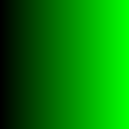

|
OGRE
13.6
Object-Oriented Graphics Rendering Engine
|
|
OGRE
13.6
Object-Oriented Graphics Rendering Engine
|
Ogre includes a Python component which automatically generates Python bindings from the C++ headers. However, with Python, you most likely do not only want to just use Ogre, but connect it to other components. For this, the Component uses standard python protocols, that offer exposing the API in a pythonic way. In this tutorial, we will look how Ogre integrates with numpy.
We start with a simple 3 channel python array representing a green gradient:

To be able to load it into Ogre we now have to convert it to Ogre.Image. The underlying C++ API takes a raw uchar*. However, the python bindings accept any object implementing the Buffer Protocol. This means we can pass the numpy array as is.
Note that Ogre.Image is merely a view on the underlying array and no data is copied. While this is efficient, it also means that you have to ensure that the array does not get out of scope manually. Otherwise the application will crash due to accessing an invalid pointer.
For completeness we also create a small scene where we map the texture on a screen-centred rectangle.
As the rectangle does not cover the full scene, we also set a background colour
Here, the standard python sequence protocol is used. Therefore, the data is copied.
Finally, we want read-back rendered image into an array. To avoid superficial copies of the data, we again allocate the memory with numpy:
Note, that the convention of specifying width and height is swapped between Ogre and numpy.
Now we can store the image to disk using pyplot.